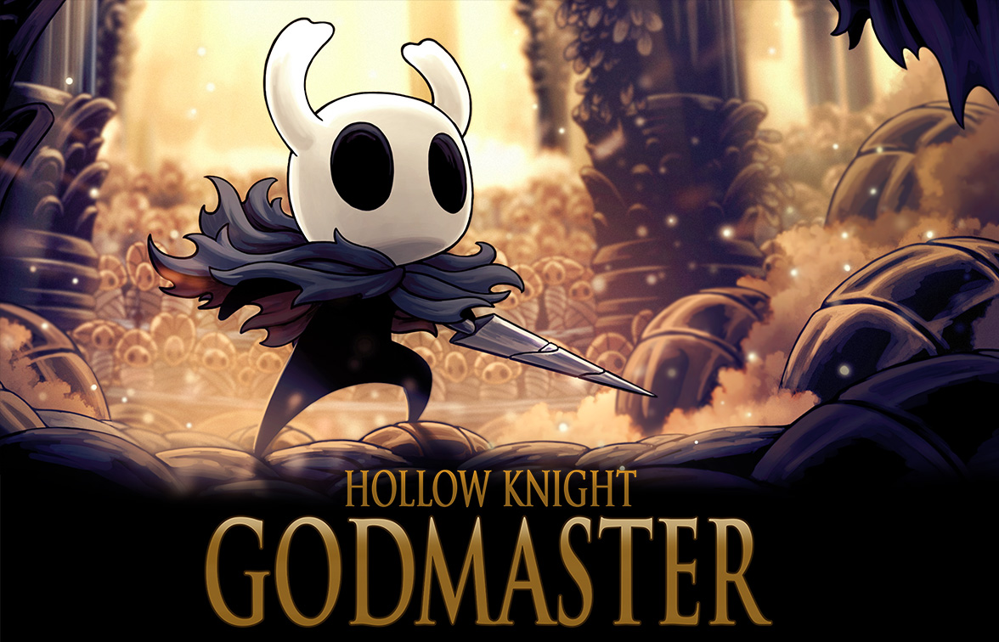

Godmaster
Godmaster foi o último dos três pacotes de conteúdo adicional grátis planejados para Hollow Knight. Foi inicialmente revelado como Gods & Glory junto com o seu conteúdo em 31 de Janeiro, 2018., mas foi renomeado para Deus Mestre em 15 de Agosto, 2018 devido a um conflito de marca registrada com o jogo móvel Gods and Glory publicado por Wargaming. Foi lançado em 23 de Agosto, 2018.
Este último pacote de conteúdo adicionou uma nova missão de fim de jogo e vários desafios de luta, novas personagens e áreas secretas, mais destinatários da Flor Delicada e novas músicas junto com alguns remixes.
Principais mudanças
- Novo Personagem e Missão - A Buscadora de Deuses chegou. Quebre suas correntes e ajude ela em seu dever antigo.
- Novos Chefes - Os maiores guerreiros de Hallownest erguem suas lâminas.
- Novo Modo de Jogo - Muito pedido e um clássico para o gênero. Complete a missão da Buscadora de Deuses para desbloquear o novo modo.
- Novas Músicas - Novos temas grandiosos e remixes de clássicos amados.

 Viagem Rápida
Viagem Rápida